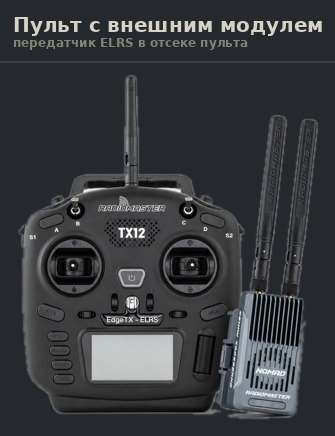
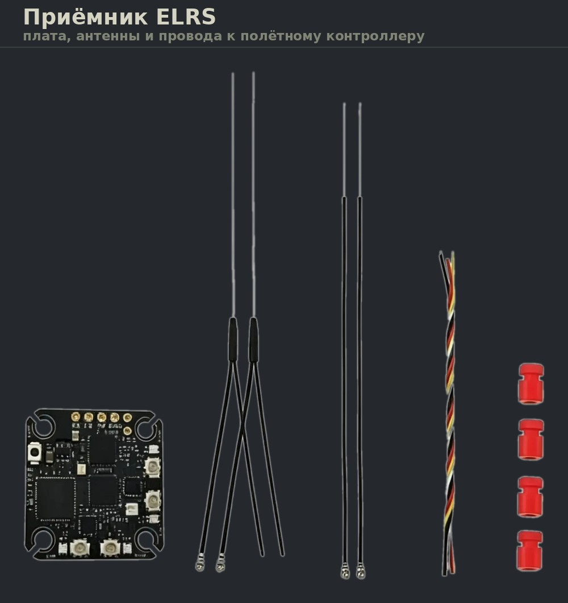

Цель урока
Цель урока Понимать, как устроен канал управления: что такое каналы, зачем нужна привязка, что делает аппарат при потере связи и от чего зависит дальность.
Пульт и передатчик
Пульт (его называют также аппаратурой управления) — то, что держит в руках пилот. Внутри него находится передатчик (TX): именно он излучает радиосигнал.
Пульт и передатчик — не два разных прибора, стоящих рядом. Передатчик находится внутри пульта. Новички часто считают, что это две отдельные коробки, и путаются в схемах.
Что внутри пульта
Корпус пульта объединяет несколько узлов, у каждого своя роль.
- Гимбалы — механизмы стиков. Внутри каждого стоят датчики, измеряющие отклонение по двум осям. От их качества напрямую зависит точность управления: дешёвые датчики со временем начинают «шуметь» и врать около центра.
- Тумблеры и крутилки — дополнительные органы управления. Каждому назначается свой канал.
- Основная плата с процессором — опрашивает все органы управления, применяет настройки выбранной модели и формирует итоговый набор каналов.
- Передающий модуль — кодирует каналы в радиопакеты и излучает их.
- Экран, аккумулятор, разъёмы — всё остальное.
Важно понимать разделение обязанностей: процессор пульта решает, что отправить, а передающий модуль — как это передать по радио. Это два разных узла, и меняются они независимо.
Встроенный и внешний передатчик
Передатчик бывает реализован двумя способами.
- Встроенный. Модуль распаян прямо на плате пульта. Компактно и дёшево, но протокол и диапазон менять нельзя — какие есть, с такими и летаете.
- Внешний модуль. Отдельная коробочка со своей антенной, которая вставляется в отсек на задней стенке пульта. Отсек стандартизирован — исторически его называют JR-отсеком, есть и уменьшенный вариант для компактных модулей.
Модульность решает конкретную задачу: один и тот же пульт может работать с разными системами связи. Сегодня в отсеке стоит модуль на 2,4 ГГц для полётов рядом, завтра — модуль на 900 МГц для дальних. Пульт, стики и все настройки моделей при этом остаются прежними.

Мощность и антенна
У передающего модуля есть регулируемая мощность — обычно от десятков милливатт до нескольких ватт. Поднимать её «на всякий случай» не стоит: модуль сильнее греется, пульт быстрее разряжается, а прирост дальности получается непропорционально малым. Вдобавок допустимая мощность ограничена законом.
Антенна передатчика значит не меньше мощности. Штыревая антенна излучает слабее всего вдоль собственной оси — то есть «в торец». Поэтому направлять антенну прямо на аппарат, как указку, — распространённая и вредная ошибка. Правильно держать её так, чтобы аппарат находился сбоку от оси антенны.
Прошивка пульта
Современные пульты работают под управлением открытой прошивки — чаще всего это EdgeTX или его предшественник OpenTX. Прошивка хранит отдельный набор настроек для каждой модели: какой тумблер за что отвечает, где арминг, какие режимы полёта, какие сигналы подаёт пульт.
Это принципиальный момент: один пульт обслуживает много аппаратов. Переключаясь между моделями в меню, пилот меняет и настройки, и параметры связи. Поэтому перед вылетом обязательно проверяют, что выбрана правильная модель — ошибка здесь приводит к тому, что аппарат ведёт себя не так, как ожидается.
Задача пульта в итоге простая: измерить положение всех органов управления, применить настройки модели, превратить результат в числа и отправить на борт. Всё остальное — экран, меню, звуки — это удобства вокруг этой задачи.
Стики и каналы
На пульте два стика — подпружиненных рычага, каждый из которых движется по двум осям. Итого четыре независимых направления. Каждое такое направление называется каналом.
- Канал
- Одна независимая величина, которую пульт передаёт на борт. Каналов столько, сколько управляемых параметров: четыре основных со стиков плюс по одному на каждый тумблер или крутилку.
Четыре основных канала соответствуют четырём способам управления аппаратом, которые мы разбирали в уроке 3:
| Канал | Что делает | Что меняют моторы |
|---|---|---|
| Газ | подъём и снижение | все четыре одинаково |
| Тангаж | наклон вперёд и назад | передние против задних |
| Крен | наклон влево и вправо | левые против правых |
| Рыскание | разворот вокруг вертикальной оси | одна диагональ против другой |
Остальные каналы отданы тумблерам и крутилкам. Самый важный из них — арминг: переключатель, который разрешает моторам вращаться. Пока он выключен, аппарат не отреагирует на газ, даже если случайно задеть стик. Другие каналы обычно включают режимы полёта, подсветку или управление камерой.
Режимы стиков
Какая ось какого стика за что отвечает — вопрос договорённости. Исторически сложилось несколько раскладок, их называют режимами и нумеруют от Mode 1 до Mode 4. На практике повсеместно используются две.
- Mode 2. Левый стик — газ и рыскание, правый — тангаж и крен. Фактически мировой стандарт: почти вся техника продаётся с этой раскладкой, и обучение обычно ведут именно по ней.
- Mode 1. Газ перенесён на правый стик, тангаж — на левый. Раскладка встречается реже.
Важная особенность: стик газа не возвращается в центр. Он остаётся там, куда его поставили, — иначе при отпускании аппарат мгновенно терял бы тягу. Остальные три стика подпружинены и сами встают в нейтральное положение.
Как сигнал идёт по воздуху
Пульт опрашивает стики много раз в секунду и упаковывает значения всех каналов в короткий пакет данных. Пакет кодируется и излучается антенной. Чем чаще уходят пакеты, тем быстрее аппарат реагирует на действия пилота.
Для управления используются два основных диапазона частот.
| Диапазон | Сильная сторона | Слабая сторона |
|---|---|---|
| 2,4 ГГц | компактные антенны, высокая скорость обмена, низкая задержка | хуже обходит препятствия, диапазон сильно загружен |
| 868–915 МГц | лучше проходит сквозь препятствия, больше дальность | крупнее антенны, ниже скорость обмена |
Общее правило радиосвязи: чем ниже частота, тем лучше волна огибает препятствия и тем дальше распространяется при той же мощности. Поэтому для дальних полётов выбирают диапазон около 900 МГц, а для полётов в прямой видимости с быстрым откликом — 2,4 ГГц.
Конкретные разрешённые диапазоны и допустимая мощность передатчика различаются в разных странах и регулируются законом. Это не технический выбор, а требование, которое нужно соблюдать.
Протоколы
Протокол — это язык, на котором передатчик и приёмник разговаривают: как упакованы данные, как часто уходят пакеты, как меняются рабочие частоты и как проверяется целостность. Приёмник понимает только свой протокол, и это главное ограничение при подборе комплекта.
- Правило совместимости
- Передатчик и приёмник должны работать по одному протоколу и в одном диапазоне. Приёмник одной системы не заработает с передатчиком другой, даже если разъёмы подходят.
Современные протоколы умеют прыгать по частотам: передатчик и приёмник синхронно меняют рабочую частоту много раз в секунду по заранее известной обоим последовательности. Если на какой-то частоте оказалась помеха, теряется один пакет, а следующий уходит уже на другой — связь не рвётся. Этот приём называется псевдослучайной перестройкой частоты.
У многих систем настраивается компромисс между скоростью и дальностью. Частые короткие пакеты дают минимальную задержку — это нужно для быстрых манёвров. Редкие пакеты позволяют приёмнику дольше «слушать» каждый, что увеличивает дальность, но отклик становится менее резким.
Две системы, которые встречаются чаще всего
На практике почти всегда речь идёт об одной из двух систем связи: TBS Crossfire или ExpressLRS. Они решают одну задачу, но устроены по-разному.
| Признак | TBS Crossfire | ExpressLRS |
|---|---|---|
| Появилась | около 2015 года | в 2020 году |
| Кто развивает | одна компания — Team BlackSheep | открытое сообщество разработчиков |
| Исходный код | закрытый | открытый, доступен всем |
| Диапазоны | 868/915 МГц; версия Tracer — 2,4 ГГц | 868/915 МГц и 2,4 ГГц |
| Частота пакетов | до 150 Гц | от 25 до 1000 Гц, настраивается |
| Задержка управления | низкая | ниже, на быстрых режимах — единицы миллисекунд |
| Оборудование | только фирменное | десятки производителей, детали взаимозаменяемы |
| Цена комплекта | высокая | в несколько раз ниже |
| Обновления прошивки | выпускает производитель | выходят часто, можно собрать свою сборку |
Разница в подходе объясняет почти все остальные различия. Crossfire — закрытая фирменная экосистема: исходный код недоступен, оборудование выпускает один производитель, цена высокая. Взамен пользователь получает предсказуемую, годами отлаженную систему, которая работает «из коробки» и имеет репутацию очень надёжной.
ExpressLRS — открытый проект. Исходный код опубликован, любой может его изучить, доработать под свою задачу и собрать собственную версию прошивки. Делать совместимое оборудование тоже может кто угодно, поэтому на рынке десятки производителей, они конкурируют между собой, и комплект обходится в несколько раз дешевле. Обратная сторона открытости — система развивается быстро, настроек заметно больше, и разбираться в них приходится самому.
CRSF — это не название радиосистемы. Так называется протокол, по которому приёмник разговаривает с полётным контроллером по проводу. Его разработали в Team BlackSheep для Crossfire, но ExpressLRS использует тот же самый протокол. Поэтому в настройках полётного контроллера для обеих систем выбирается одно и то же — CRSF, хотя по воздуху они работают совершенно по-разному.
Для учебных и любительских аппаратов сегодня обычно выбирают ExpressLRS: он дешевле, доступнее и даёт сопоставимые характеристики. Crossfire остаётся там, где важнее всего проверенная временем стабильность и поддержка одного производителя.
Приёмник
Приёмник (RX) — ответная часть на борту аппарата. Он принимает пакеты, проверяет их целостность и передаёт значения каналов полётному контроллеру.
Выглядит он неожиданно скромно: плата размером с ноготь, весом в пару граммов, из которой торчат проводки питания, сигнальный провод и тонкая антенна. Именно поэтому на фотографиях собранного дрона приёмник обычно незаметен — он прячется под рамой или под полётным контроллером, а снаружи видна только антенна.

Как он подключён
От приёмника идут всего несколько проводов к полётному контроллеру: два на питание и один-два сигнальных. По сигнальному проводу значения всех каналов передаются одним потоком данных — отдельный провод на каждый канал, как было в старой технике, давно не нужен.
Приёмник не управляет моторами и ничего не решает сам. Это переводчик: из радиосигнала в числа, понятные контроллеру. Все решения принимает полётный контроллер — о нём пойдёт речь в уроке 7.
Одна антенна или две
Простые приёмники имеют одну антенну, у более серьёзных их две. Вторая антенна решает конкретную проблему: аппарат в полёте постоянно меняет положение, и одна антенна периодически оказывается повёрнутой к пульту неудачно. Приёмник с двумя антеннами непрерывно сравнивает качество приёма и использует ту, по которой сигнал лучше.
Эффект заметный, поэтому для дальних полётов двухантенный приёмник предпочтительнее. Антенны при этом разносят под углом друг к другу — если закрепить их параллельно, смысл теряется.
Антенну приёмника стараются вывести наружу и подальше от углепластика, металла и силовых проводов: всё это экранирует сигнал. Типичное решение — протянуть антенну в тонкой трубке вдоль луча рамы или вывести вверх. Прижатая к раме антенна способна сократить дальность в разы, при том что сам приёмник полностью исправен.
Уровень сигнала
У приёмника есть важный показатель — уровень сигнала. Он говорит, насколько уверенно принимаются пакеты: не просто «есть связь или нет», а какой остался запас до её потери.
Этот показатель отправляется обратно пилоту вместе с телеметрией, и следить за ним в полёте обязательно. Его падение предупреждает о приближении к границе дальности заранее — пока связь ещё есть и можно развернуться.
Привязка
В воздухе одновременно могут работать несколько комплектов. Чтобы аппарат слушался только своего пульта, выполняется привязка (bind) — однократная процедура знакомства передатчика с приёмником.
Во время привязки устройства обмениваются уникальным идентификатором и согласуют параметры связи. После этого приёмник принимает пакеты только от своего передатчика и игнорирует все остальные. Повторять процедуру нужно лишь при замене оборудования или смене настроек связи.
Телеметрия
Связь между пультом и аппаратом двусторонняя. Вверх уходят команды, а вниз возвращается телеметрия — данные о состоянии аппарата.
- напряжение аккумулятора и израсходованная ёмкость;
- уровень сигнала связи;
- высота и скорость;
- координаты, если на борту есть приёмник спутниковой навигации.
Телеметрия идёт по тому же каналу управления, а не по видеоканалу. Поэтому напряжение батареи пилот видит даже тогда, когда видео пропало, — при условии, что управление работает.
Потеря связи
Радиосвязь может прерваться: аппарат ушёл слишком далеко, заслонился препятствием, появилась сильная помеха. На этот случай предусмотрено заранее заданное поведение — failsafe.
Логика проста: если приёмник не получает пакетов дольше установленного времени, он сообщает об этом полётному контроллеру, и тот выполняет заложенное действие.
| Вариант | Что делает аппарат | Когда уместно |
|---|---|---|
| Выключение моторов | немедленно останавливает моторы и падает | полёты над безопасной площадкой; исключает неуправляемый улёт |
| Снижение | плавно теряет высоту и садится | когда важно сохранить аппарат |
| Возврат домой | летит к точке взлёта и садится | только при исправной спутниковой навигации на борту |
Поведение при потере связи проверяют на земле, со снятыми винтами, до первого вылета. Непроверенный failsafe — одна из главных причин потери аппаратов: пилот узнаёт, что он настроен неверно, уже в момент аварии.
От чего зависит дальность
Дальность — не паспортная константа, а результат совпадения условий. На неё влияют четыре фактора.
- Мощность передатчика. Влияет напрямую, но ограничена законом, и рост мощности даёт не пропорциональный прирост дальности.
- Антенны и их положение. Антенна излучает неравномерно: у штыревой антенны слабее всего сигнал вдоль её оси — то есть «в торец». Поэтому направление антенн на пульте и на аппарате важно не меньше мощности.
- Препятствия. Главный враг связи. Деревья, здания и рельеф ослабляют сигнал, причём чем выше частота, тем сильнее. Отдельный случай — полёт у самой земли: даже при прямой видимости связь у поверхности заметно хуже, чем на высоте.
- Настройки протокола. Чем реже уходят пакеты, тем дальше добивает связь, но тем выше задержка управления.
Разбор примеров
Условие. Пилоту нужно управлять аппаратом, включать и выключать моторы, переключаться между тремя режимами полёта и включать подсветку. Сколько каналов потребуется?
Рассуждение. Управление аппаратом — четыре основных канала со стиков. Арминг — один тумблер, один канал. Три режима полёта — это один трёхпозиционный тумблер, тоже один канал. Подсветка — ещё один.
Ответ. Семь каналов. Обратите внимание: три режима полёта не требуют трёх каналов — один канал передаёт положение тумблера, а их может быть несколько.
Условие. На высоте тридцати метров связь уверенная на километр. Стоит снизиться к земле — уровень сигнала падает, хотя до пульта остаётся прямая видимость.
Рассуждение. У самой земли часть энергии волны отражается от поверхности и поглощается ею, а трава, кусты и неровности рельефа дополнительно ослабляют сигнал. Прямая видимость — необходимое, но не достаточное условие хорошей связи.
Ответ. Это нормальное поведение радиоволн у поверхности, а не поломка. Поэтому пульт стараются поднять повыше, а антенну располагают так, чтобы она не была направлена в сторону аппарата торцом.
Вопросы для ответа
Ответьте на вопросы своими словами, и только потом сверьтесь с подсказкой.
-
Почему стик газа не подпружинен и не возвращается в центр, в отличие от остальных трёх?
Потому что газ задаёт тягу, которая должна сохраняться постоянно. Если бы стик возвращался в центр, то при отпускании аппарат мгновенно терял бы тягу и падал. Остальные три канала задают отклонение от нейтрального положения, и возврат в центр для них естественен: отпустил — аппарат выравнивается.
-
Видео с аппарата пропало, но на экране пульта по-прежнему видно напряжение аккумулятора. Как такое возможно?
Напряжение приходит по телеметрии, а телеметрия идёт по каналу управления, а не по видеоканалу. Это два независимых радиоканала с разными частотами и антеннами. Видеоканал оборвался, канал управления продолжает работать — поэтому данные о состоянии аппарата доходят, а картинка нет.
-
Почему поведение при потере связи обязательно проверяют на земле со снятыми винтами?
Потому что иначе пилот узнает, как именно настроен failsafe, только в момент реальной потери связи — когда исправить уже ничего нельзя. Неверная настройка приводит либо к неуправляемому улёту, либо к падению в неподходящем месте. Проверка на земле ничем не рискует, а винты снимают, чтобы аппарат не рванул со стола при подаче газа.
Видео к уроку
Видео разбирает аппаратуру управления и протоколы связи подробно, с показом реальных пультов и приёмников.
Источник: канал «Школа БПЛА «Октагон»», урок «Пульты и протоколы управления».
Проверка знаний
Тест по уроку 5
15 вопросов с одним вариантом ответа по материалу урока. В начале теста укажите фамилию, имя и группу. Проверка автоматическая, рекомендуемый результат — не менее 12 правильных ответов из 15.